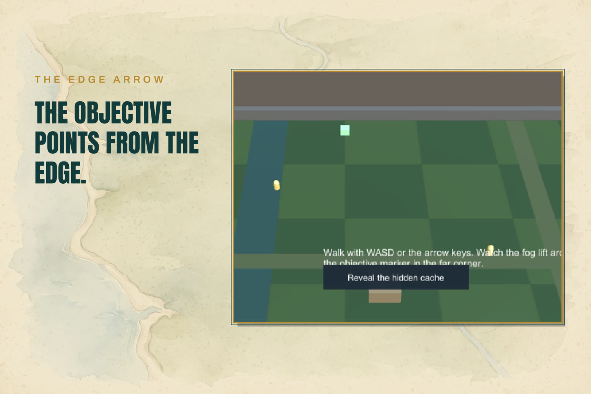

The Minimap View
MinimapView is a component you add to a UI panel on your HUD canvas. It draws, as children of one content holder: your background image, the fog overlay, and the icon layer.

Modes
- Follow — set
FollowTarget(usually the player). The content scrolls so the target stays centered, clamped so the view never shows outside the map when the content is larger than the view; when the content is smaller than the view, it centers. - Full World — leave
FollowTargetempty and the whole bounds are fitted into the panel.
Rotation
- North Up — the content never rotates.
- Player Up — the content rotates so the followed target's heading points up; heading-tracked icons counter-rotate so they keep pointing the way the object faces.
Shape and zoom
- Shape —
Rectangle(the default) orCircle(uses the circle mask sprite Run Setup generates). - Zoom — discrete levels scaling the content, clamped between
MinZoomandMaxZoom. Changing zoom re-centers on the followed target: the target's screen position does not jump.
The objective edge arrow
While an objective is tracked (Quest Hooks) and sits outside the visible part of the minimap, an arrow appears at the view border, clamped to the edge with a margin, pointing outward toward it. When the objective enters the view, the arrow hides and the objective's own icon takes over. Turn the arrow off with ShowObjectiveArrow if your game points at objectives some other way.
Cost
Per-frame updates move existing RectTransforms and change no strings, create no objects, and run no LINQ. Icons are pooled per view and reused across markers; marker add/remove is the only structural event, and it is pooled too.